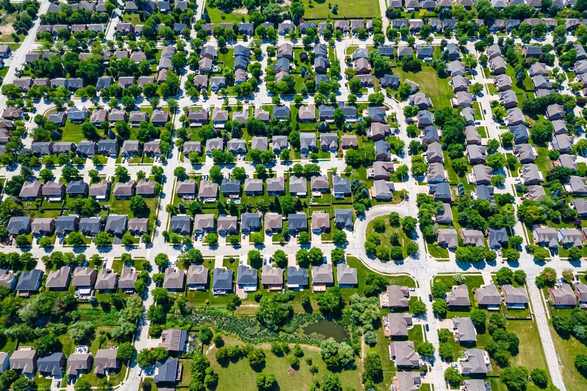

Buffalo Grove, IL
Buffalo Grove is the primary service area for this local plumbing referral website. We help residents understand urgent pipe issues and connect with independent local providers.
View area page →Browse suburb-specific guidance and learn what to ask an independent provider about availability, credentials and pricing.

Buffalo Grove is the primary service area for this local plumbing referral website. We help residents understand urgent pipe issues and connect with independent local providers.
View area page →
Residents in Wheeling can use this site to review pipe-repair guidance and find next steps for contacting independent local plumbing professionals.
View area page →
This area page shares practical pipe-leak guidance for Arlington Heights and explains how to seek help from an independent local provider.
View area page →
Lincolnshire residents can use these resources to understand burst-pipe warning signs and prepare for a plumbing assessment.
View area page →
Find practical information about plumbing leaks, frozen pipes, and what to ask a local plumbing professional in Vernon Hills.
View area page →
This page offers pipe-repair information for Long Grove residents and a starting point for contacting an independent professional.
View area page →
Review the first steps for pipe leaks and urgent plumbing issues in Riverwoods, then seek an appropriately qualified local provider.
View area page →Share the type of issue and your area. Ask about provider availability, credentials, and pricing before authorizing work.